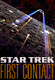
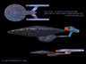

From: tlynch@alumnae.caltech.edu (Timothy W. Lynch)


Written by: Brannon Braga & Ronald D. Moore (screenplay);
Rick Berman & Brannon Braga & Ronald D. Moore (story)
Directed by: Jonathan Frakes
The camera pulls back from a close-up of someone's eye, soon revealed as Picard's. As it pulls back, Picard is shown in a Borg cube, one of millions of beings. As flashbacks continue, we see him gradually altered ... changed ... assimilated. As Locutus of Borg, he controls an attack on the Federation -
- and wakes. Groggy and uneasy, he washes his face, then looks in the mirror. He sees something moving under his cheek. Suddenly, a Borg servo erupts from his cheek -
- and Picard wakes again, for real this time and in a cold sweat, just in time to hear the comm channel chirp at him. It's a call from an admiral - the Borg have attacked a Federation outer colony and are heading directly for Earth. However, for some reason, Picard already knew that...
Later, at a briefing, the senior staff (including Geordi with ocular implants instead of a VISOR) hears that it's only one ship, and that Starfleet is assembling a fleet to intercept them. Data begins to rattle off times to meet the fleet, but Picard interrupts: "We're not going". The Enterprise-E's orders are to patrol the Neutral Zone, in case the Romulans decide to take advantage of the situation. Everyone is incredulous, but Picard is adamant.
After their first patrol, Riker goes to give Picard the initial report. Picard reads off various dry observations, then scoffs "well, this is certainly worthy of our attention". Riker asks why the Enterprise is stuck on this patrol, and Picard notes that the concern is with the captain, not the ship or crew. It seems that Starfleet feels Picard might be "an unstable element" in the battle, given his prior abduction and alteration by the Borg; and despite Riker's objections that the worry is preposterous, Picard notes that Starfleet disagrees. Suddenly, Troi calls in saying that Starfleet has engaged the Borg, and Picard and Riker hurry to the bridge.
Sounds of the battle are patched in, audio only. The crew hears Starfleet orders, Borg threats (which echo those Picard remembers making himself as Locutus), more Starfleet orders - then, suddenly, silence. Picard immediately orders helmsman Lt.\ Hawk to take the ship to the battle, noting that it's a violation of orders. He waits for objections, but Data reassures him "I believe I speak for everyone when I say ... to hell with our orders".
At the battle, one ship in the thick of things is the Defiant, with Worf in command. We see the final seconds of a heavy onslaught; the Defiant is without weapons or shields. Worf muses that "perhaps today is a good day to die", then orders ramming speed. Just in time, however, the Enterprise appears and draws away the Borg fire, allowing the Defiant to retreat. Picard orders the Defiant survivors beamed aboard, and then, with the flagship destroyed, takes command and orders fire concentrated on a seemingly nonessential part of the ship. The attack works, and the Borg cube is destroyed - but not until a much smaller Borg sphere ejects from the cube and heads quickly towards Earth's atmosphere. As the Enterprise pursues, it opens a temporal vortex and vanishes.
As the temporal wake created by the vortex clears (though the vortex remains open briefly), the Enterprise crew gets another look at Earth. Sensors say that the entire population of the planet is now Borg. Shocked, Picard realizes that the Borg have gone back and altered history, and he orders the Enterprise to continue through the vortex in order to repair the damage the Borg have done.
The scene shifts, to Earth. Stumbling out of a ramshackle bar is Zefram Cochrane, together with his assistant Lily Sloane. Cochrane, drunk, looks up where Lily points just in time to see the Borg ship leave the vortex - and then both of them must run for cover as weapons fire riddles the compound. Lily runs for "the Phoenix", but Cochrane stays put...
The Enterprise arrives in the middle of this and destroys the Borg sphere with a few well-placed quantum torpedoes. Although long- range sensors are out, the location of the Borg attack is revealed as a missile silo in Montana, and the date as April 6, 2063: the day before Zefram Cochrane's historic first warp flight that initiates Earth's first contact with other civilizations - a flight made from that very silo. Reasoning that the Borg intent was to stop first contact, Picard orders himself, Crusher, Data, and a team down to investigate the damage.
The area is badly damaged, with dead and wounded everywhere, but there's no sign of Cochrane. The team heads for the warp ship, and finds it slightly damaged. However, Lily is there in hiding and attacks, convinced they're from a hostile faction of this time. Data jumps down several stories and introduces herself, whereupon Lily passes out from radiation poisoning. Crusher beams both Lily and herself back to sickbay, and Picard orders Riker to bring down an engineering team to start repairing the damage to the ship. As Geordi assembles his team on board the ship, he orders one of the remaining engineers to check the environmental controls: "it's getting kinda hot in here".
Picard and Data gaze at the warp ship: Picard enraptured by history, Data puzzled by Picard. Troi pokes her head in to tell them that there's no evidence of Cochrane in the silo; Picard orders the search expanded. He then contacts the Enterprise; upon hearing about the environmental problems, he immediately has himself and Data beamed back, leaving Riker in charge.
In engineering, one engineer hears something in a conduit and moves to investigate; he's then attacked by something. A second engineer follows him in and is attacked herself...
Crusher finishes treating Lily, being careful to leave her unconscious so as not to unduly impact the timeline. However, she wonders why it's suddenly gotten so hot - and then there's a pounding on the door...
Picard returns to the bridge and hears that contact with engineering has been lost. When he hears the exact environmental conditions that were in place right before loss of contact, he confirms that it's the conditions aboard a Borg ship. Reasoning that they must have beamed aboard as their ship was being destroyed in order to assimilate Earth through the Enterprise, he orders Data to lock out the main computer, then begins to plan a counterassault.
He suggests that any attack on engineering (the central gathering place for this collective) should focus on the plasma injectors; the corrosive plasma will kill the organic part of the Borg while leaving the warp core intact. With all agreed, the teams begin to disperse - but not before Picard reminds them that they'll probably come into contact with assimilated crew, and urges them to fire without hesitation: "believe me, you'll be doing them a favor".
Back on Earth, meanwhile, Riker finds Troi in a bar listening to loud rock music with a drink in her hand, and Zefram Cochrane in attendance. Drunk and boisterous, Cochrane's in no mood to be lectured to - so Troi talks to Riker instead, telling him that Cochrane doesn't buy their cover story and that they should just tell him the truth. Asked whether he could handle it, she replies, "If you want my professional opinion as ship's counselor ... he's NUTS".
In sickbay, Crusher wakes a panicked Lily and tells her to accompany them as sickbay's being evacuated out a Jefferies tube. Swearing under her breath, she activates the emergency medical holographic program and tells it to stall for time. He does, suggesting that the Borg might like an analgesic for their skin irritation, as the medical personnel retreat further and further away. Seeing an opportunity, however, Lily ducks down one tube as the rest of the staff goes another.
Picard, Worf, Data, and various security teams head for engineering. Worf's team finds Crusher and the rest of the medical personnel, and one guard escorts them to safety. The teams eventually run into groups of Borg, but the Borg do not attack; the Enterprise teams aren't considered a threat. That is, they're not considered a threat until the door to engineering is threatened: then they begin converging. The tide very quickly turns against the Enterprise crew, with people being killed or assimilated right and left. Picard manages to get the door open and kill a few Borg, but is forced to retreat. As Picard is cut off from Worf's team, he sees Data attacked and dragged inside engineering; Picard then opens a Jefferies tube himself, climbs in, and seals it behind him. Just then, however, Picard is again attacked - by Lily, in a panic. Seizing his phaser, she brandishes it and demands he get her away from wherever they are. Despite Picard's assertion that he's not part of one of the factions she knows of, she insists they leave "or I start pushing buttons'.
Data, meanwhile, is strapped down and inspected by various Borg. He points out that they will not get the encryption code for the main computer from him, but a disembodied female voice says that she's heard similar boasts from thousands of species across thousands of worlds; "finding your weakness is only a matter of time". A drill nears, activates, and enters Data's head...
Riker, Troi and Geordi explain Zefram Cochrane's pivotal role in history to him, which amuses a skeptical Cochrane no end - until Geordi fixes his telescope on the Enterprise in orbit. They explain to him that his one warp flight brings about the notice of an exploration ship passing through this solar system. That contact eventually causes a golden age to begin on Earth and humanity's part in founding the Federation itself - but that if he doesn't make that flight the next day, the explorers will take no notice of Earth. Cochrane reluctantly agrees to help.
Picard and Lily enter an observation deck, where she continues to demand that he get her back to Montana. Faced with few options, Picard shows her the truth: he opens up a viewport and shows her Earth from orbit. "What is this?" "Australia... New Guinea... the Solomons. Montana should be up soon, but I recommend you take a deep breath: it's a long way down". Stunned, Lily now listens to Picard's persuasions, and gives up the phaser. Picard examines it and notes that at that setting, Lily "would have vaporized me". Lily sheepishly says, "It's my first ray gun".
Worf finally returns to the bridge, where Hawk reports that the Borg have stopped amidships. Worf wonders why, and also concludes that both Data and Picard are gone.
The "interrogation" of Data continues. The disembodied voice now assumes a body: a female head, neck and shoulders with prosthetics combined with a mechanical Borg body. The queen, for such she is, tells Data that his quest for humanity is a backwards one: the Borg were like humans once, but eventually evolved to be able to include the synthetic, and have now achieved perfection. Data, emotional, points out that a belief in one's own perfection is often a sign of a delusional mind, but the queen is serene in her beliefs. She reveals to Data that she is replacing his android skin with human skin. She leans down over his now human forearm, and blows gently. Data reacts with goosebumps...
Picard and Lily, meanwhile, wade back out through a sea of Borg trying to get back to the bridge. While the Borg are not hostile at first, eventually two of them try to track Picard and Lily down. Low on options, Picard goes to a nearby holodeck and loads a Dixon Hill program. He and Lily enter, with two Borg close behind (who destroy a holographic bouncer). After changing the chapter to the one he intended, Picard dances Lily over to notorious gangster "Nicky the Nose". After a few moments of conversation, Picard grabs a machine gun from one of the thugs and begins gunning down the two Borg who have followed them. One of them falls immediately, but the other keeps coming. As it grows nearer and Picard's ammunition runs low, he screams in anger - and the Borg finally falls. Relieved, Picard runs over to the fallen Borg and begins ruthlessly rooting around its innards searching for a memory chip. Lily notes with horror that the Borg had a Starfleet uniform, and Picard agrees, saying that the destruction can no longer be helped.
Earthside, as repairs continue on the Phoenix, Cochrane becomes more and more uncomfortable with the hero-worship the entire engineering team seems to be exhibiting towards him. When Geordi, trying to be helpful, notes that he went to Zefram Cochrane High School and points out the future location of a statue of Cochrane, Cochrane makes a quick exit: "I gotta take a leak".
Picard returns to the bridge with Lily, noting that "reports of my assimilation have been greatly exaggerated". He's found out from the memory chip what the Borg are planning: they intend to use the ship's deflector dish to send a message to this era's Borg, telling them to attack Earth now. With no obvious way to get to the dish, Picard turns to Worf: "Do you remember your zero-g combat training?" Worf remembers that it made him ill, then looks a bit ashen when he realizes why Picard's asking. Picard orders Hawk and Worf to suit up alongside him: "I think it's time we took a little stroll".
Meanwhile, a more and more human-looking Data rejects the queen's offer of perfection and breaks free of his restraints. When he is cut by one of the Borg drones, however, he stops, wracked with surprise and pain, and unable to deal with these new sensations. The queen slowly backs him up into a corner, noting these new sensations and how much closer he has come to their way. She asks about other forms of physical interaction, implying sexuality: Data notes that he is "fully functional". When he begins to tell her how long it's been since he's used those programs, she cuts him off: "Far... too long". She drags him down for a kiss, which he eventually returns with some fervor...
Picard and company prepare to move out. Lily advises him to "watch your caboose, Dix", as the three head out onto the hull and move along its underside to the deflector dish...
Riker and Geordi head through the woods, looking for the long- overdue Zefram Cochrane.
Picard, Worf, and Hawk make it to the area around the deflector dish, where several Borg are assembling the transmitter they intend to use. Picard plans to release the three magnetic locks holding the dish in place, but all three must be released, and the mechanisms are on three different parts of the dish. The three fan out. As each reaches their particular control and begins to operate, the Borg take notice. One approaches Worf, who kills it with a phaser. A second approaches Picard, but the Borg have adapted to phaser fire; Picard fires at the hull just under the Borg, letting the impact send the Borg hurtling out into space. A third one also moves on Worf right after he releases his own lock, who severs its arm and kills it with a knife - but not before it slashes part of his suit in return. Decompression is imminent...
The work continues. Picard releases his lock, but Hawk is attacked by a Borg and removed from the scene. With Borg converging on Picard, he moves to the side of the dish, releases his boot clamps, and launches himself sideways over the heads of the Borg until he reaches the other side of the dish. Locking himself back down, he heads for the third lock - only to be intercepted by a now-assimilated Hawk. Hawk cracks Picard's faceplate and prepares to shatter it -
- only to be killed by Worf, who's used the Borg arm as a tourniquet for his suit. Picard releases the third lock, and the dish is released, beginning to drift into space. When it gets high enough, Worf destroys it.
The queen, sensing this, turns to Data. "We've had a change of plans, Data".
Riker and Geordi finally manage to track down Cochrane, who's changed his mind. Uncomfortable with history, he declaims, "I don't want to be your statue!" Riker, not having the time to argue, stuns Cochrane with a phaser, then turns to Geordi in annoyance: "You told him about the statue?"
Picard and Worf return to the bridge from their excursion, and hear that the Borg are on the move again, soon to overrun the ship. Worf suggests the auto-destruct, but Picard refuses, saying that they will not lose the Enterprise on his lost. When Worf insists that the auto- destruct is the best idea and that Picard is letting his past cloud his judgment, Picard calls Worf a coward and orders him off the bridge. As Picard stalks into his ready room and everyone else settles down to carry out his orders, Lily decides to go in after him.
She finds Picard there adjusting a weapon. When she suggests the auto-destruct, he is equally adamant that there are other ways, saying that he has a unique perspective on the Borg. After he describes what they did to him, Lily observes that this isn't a desire to protect the crew speaking: it's a desire to hurt the Borg in return for what they did to him. Picard insists that in his century, humans are no longer guided by the desire for vengeance, but Lily will have none of it. When she keeps prodding, saying that "Ahab must have his whale", Picard becomes more and more insistent that he will draw a line and make the Borg pay for their actions. Eventually, he snaps, swinging his weapon into a display case with models of the past Enterprises. As he calms down, he realizes what he has done and begins quoting a passage from Melville, explaining that Ahab's desire for revenge on the whale that crippled him eventually destroyed Ahab and his ship. "Guess old Ahab didn't know when to quit", observes Lily.
With one hour left to the Phoenix's launch, Cochrane tells Riker that he's neither the saint nor the visionary history has made him out to be. His vision? Money. He was building this ship in order to retire to "some tropical island filled with naked women", and that's all. Riker observes, "Someone once said, 'Don't try to be a great man; just try to be a man, and let history make its own account'." "What rhetorical nonsense. Who said that?" asks Cochrane. "You did", smirks Riker, and suggests that Cochrane get back to his checklist.
Picard returns to the bridge and orders the evacuation of the Enterprise. Then he, Crusher and Worf set the auto-destruct to a 15- minute silent countdown. As the crew heads for escape pods, Picard hears Data in his brain...
The Phoenix prepares for launch, with Cochrane accompanied by Riker and Geordi. With seconds remaining, Cochrane panics that he's forgotten something essential. Riker prepares to abort, but Cochrane finds what he needs: a rock-n-roll disc. With "Magic Carpet Ride" blaring, the Phoenix launches...
Picard sees off Lily with instructions for Riker, but responds to her question by confirming that he's not leaving. His friends once risked everything for him, he notes, and he needs to return the favor. He heads for engineering and is let in without incident. As he strides in search of Data, the queen greets him, and Picard remembers - she was there all along when he was Locutus. As she reveals a captive and partly-human Data, however, Picard remembers more, saying that she wanted an {\it equal} in Locutus, not just a drone. For that to happen, however, Picard needed to give himself freely, and he would not. He offers himself now in place of Data. The queen muses on his nobility, and releases Data. Data, however, refuses to leave, and the queen points out that "I already have an equal". Data deactivates the auto-destruct and engages sensors, pointing out that Picard "will make an excellent drone".
With only minutes remaining until the explorer ship will leave the solar system, Cochrane prepares for warp, but is surprised to see the Enterprise looming in orbit nearby. Riker reassures him that it's probably just there for a sendoff.
Picard, strapped down, sees Data release the main computer and launch three torpedoes at the Phoenix. The queen dreamily says to Picard, "Watch your future's end". Picard sees the torpedoes drift ever-nearer the Phoenix -
- and miss cleanly.
The queen whirls, shocked, to hear Data snarl at her that "resistance is futile". He smashes the plasma conduit, being slammed to the floor by the impact. Picard, seeing an opportunity and an open strap, leaps up out of the plasma's way and begins climbing to safety, only to have the queen climb after him. She hangs onto him, until a horribly disfigured Data rises out of the plasma to grab her. Her grip weakening, the queen falls into the plasma, and begins dissolving. As she screams, Picard grabs a cable and swings to safety.
Zefram Cochrane triggers the warp engines and howls in amazement as the Phoenix goes to warp.
Picard, safe, triggers a safety device to clear away the plasma. He finds what's left of the Borg queen - mechanical body intact, but head and torso reduced to a small skull and spine - and shatters her spine. Data calls to Picard weakly, but observes that "I imagine I look worse than I ... feel". He muses that he was tempted by her offer for a time. "How long?" "0.68 seconds, sir. For an android, that is nearly an eternity". Picard helps him up, and the two leave engineering.
The next day, things are returning to normal. The Phoenix's flight was successful (and the Enterprise stayed in the shadow of the moon in order not to be detected by the explorer ship), and the explorers touch down that evening. The door opens, and three robed figures descend. The leader comes to the forefront and pulls back his hood, revealing upswept eyebrows and pointed ears. Cochrane, with some prodding by Riker, comes forward as well.
The lead Vulcan raises his hand in the traditional salute. "Live long and prosper".
Cochrane tries to return the salute, but cannot. He settles for a handshake. "How you doin'?"
As the encounter continues, Picard tells the crew it's time for a discreet exit. He says a quick farewell to Lily, answering her envy for his time with his own envy for the world she's about to help create. Kissing her cheek softly, he leaves.
Aboard the Enterprise, Picard orders Geordi to recreate the vortex that brought them to the 21st century. "I have a feeling our future is waiting for us".
As Zefram Cochrane introduces the Vulcans to the wonders of tequila and rock music, the Enterprise returns to the 24th century. And the adventure continues...
Capt. Jean-Luc Picard ....... Patrick Stewart
Cmdr. William Riker ......... Jonathan Frakes
Lt. Cmdr. Data .............. Brent Spiner
Lt. Cmdr. Geordi La Forge ... LeVar Burton
Lt. Cmdr. Worf .............. Michael Dorn
Dr. Beverly Crusher ......... Gates McFadden
Lt. Cmdr. Deanna Troi ....... Marina Sirtis
Lily Sloane ................. Alfre Woodard
Zefram Cochrane ............. James Cromwell
Borg Queen .................. Alice Krige
Lt. Hawk .................... Neal McDonough
Holographic Doctor .......... Robert Picardo
Lt. Barclay ................. Dwight Schultz
Nurse Ogawa ................. Patti Yasutake